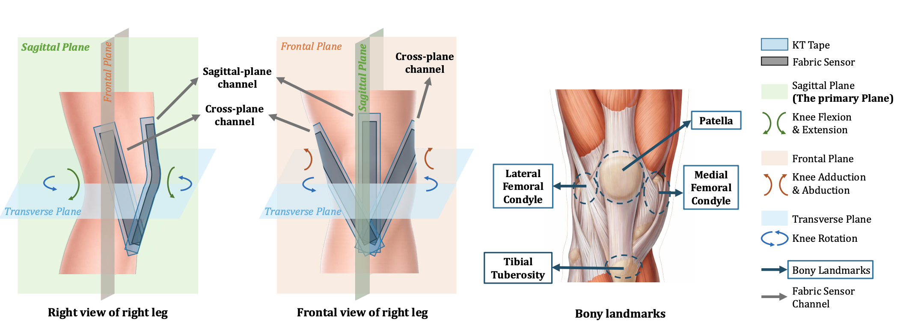
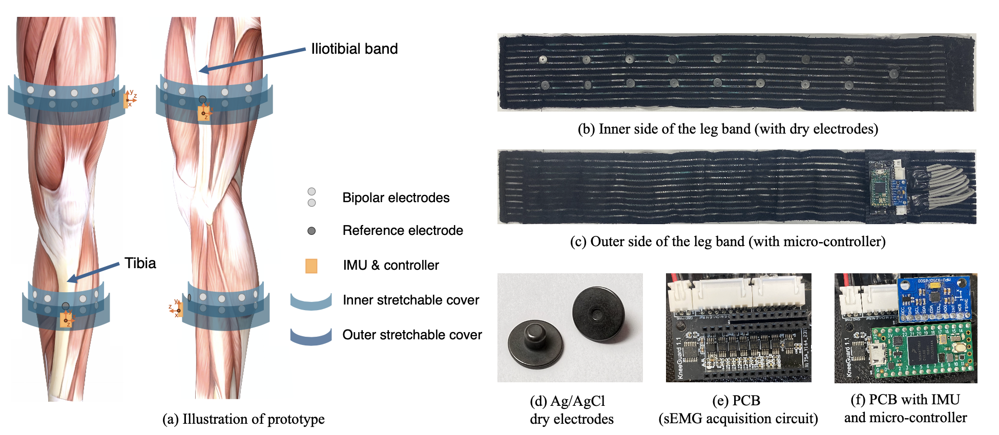
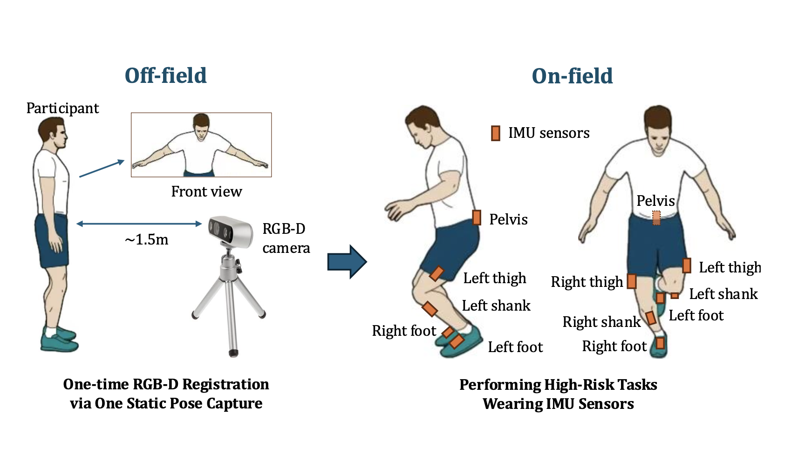
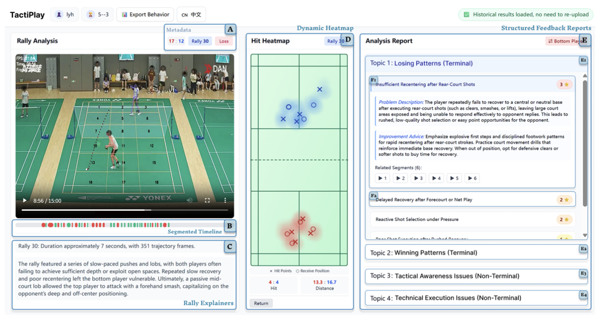
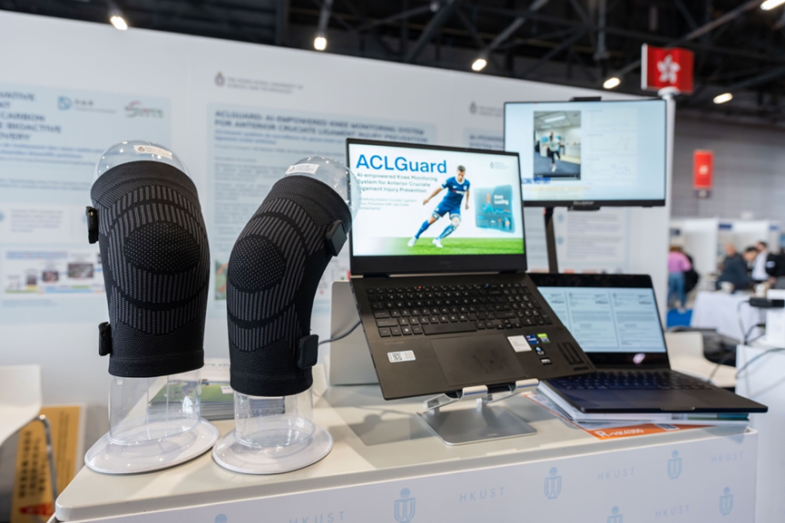

01First authorDesign study
PHD STUDENT · HKUST
Xinyi ZhangAlyssa
I build human-centric multimodal AI systems for health and sports.
01 / 03
About
I am a PhD student at the Hong Kong University of Science and Technology, supervised by Prof. Qian Zhang. My research explores how mobile sensing and machine intelligence can move health assessment out of the clinic and into everyday life.
Before joining HKUST, I received my B.Eng. in Automation from the College of Electrical Engineering, Zhejiang University in 2021. I am especially interested in smart rehabilitation and AI-assisted sports—building systems that are rigorous enough for clinical insight and effortless enough for real-world use.
Selected research
* denotes equal contribution

02Co-first author
03Co-authorACLGuard: Physics-Aware Knee Loading Monitoring System for Anterior Cruciate Ligament Injury Prevention Training

04Co-authorTactiPlay: Multi-Granularity Tactical Parsing and Video-Anchored Match Review for Amateur Badminton Players
Featured project · Award

Gold Medal · 51st International Exhibition of Inventions Geneva
ACLGuard
AI-powered ACL injury prevention system
Led by Prof. Qian Zhang, ACLGuard is an AI-driven system that turns laboratory-grade biomechanical assessment into portable, real-time, and personalized protection for athletes. It addresses a critical gap in preventive training: the lack of objective monitoring and actionable feedback outside specialized clinics.
Physics-Aware AI
Encodes inverse dynamics into neural networks to estimate knee loading and joint angles with an NRMSE as low as 11%.
In-time Bio-feedback
Provides immediate visual alerts and corrective guidance for high-risk movements during training.
Personalized AI Coach
Uses an individualized LLM to translate risk patterns into targeted landing, agility, and strength programs.
Developed with medical collaborators including CUHK Medicine, Shanghai Sixth People's Hospital, and The First Affiliated Hospital of Sun Yat-sen University.
Journey
PhD Student
Hong Kong University of Science and Technology
Qian's Group
B.Eng. in Automation
College of Electrical Engineering
Zhejiang University